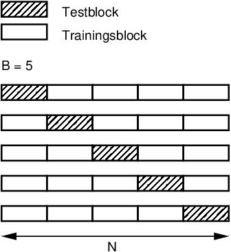

Im Sommersemester 2022 wird die Prüfungsleistung für das Modul Betriebssysteme nicht durch eine Klausur erbracht, sondern in Form einer Programmieraufgabe mit schriftlicher Ausarbeitung (Ausarbeitung im Umfang von bis zu 4 A4-Seiten).
Bitte lesen Sie sich diese Anleitung zur Prüfungsleistung gründlich durch.
Bei Fragen zur Aufgabenstellung schreiben Sie bitte eine Email an: moeller@techfak.uni-... (18.7.-22.7., danach Urlaub bis 14.8; ab 1.8. können Sie sich an die Tutoren Benedikt Volkmer oder Nils Beckmann via bstut@techfak.uni-... wenden). Es werden nur Fragen zur Aufgabenstellung beantwortet. Bitte schicken Sie auch keine Programme oder Programmteile in Ihrer Anfrage.
Zu erbringen ist die folgende Aufgabe zur betriebssystemnahen Programmierung in der Programmiersprache C im Betriebssystem Linux unter Nutzung der POSIX-Thread-Bibliothek.
Zu implementieren ist eine parallele Variante des Verfahrens "k-nearest neigbors" (KNN, "k nächste Nachbarn"), siehe z.B. https://en.wikipedia.org/wiki/K-nearest_neighbors_algorithm. Dieses einfache Verfahren kann für die Klassifikation von Datenpunkten eingesetzt werden. Die Trainingsphase des Verfahrens besteht lediglich darin, dass alle Trainingsvektoren zusammen mit ihren Klassen abgespeichert werden. Für die Klassifikation eines Testvektors werden zunächst die k nächstgelegenen Trainingsvektoren ermittelt. Dabei ist die natürliche Zahl k (k >= 1) der einzige Parameter des Klassifikators. Die Abstandsbestimmung erfolgt häufig über den euklischen Abstand (bzw. dessen Quadrat, um die Berechnung der Wurzel zu vermeiden). Dem Testvektor wird dann diejenige Klasse zugewiesen, welche unter den k Nachbarn am häufigsten auftritt.
Die Berechnung der Klassifikation ist zeitaufwändig, da bei der Klassifikation zunächst der Abstand zu allen Trainingsvektoren berechnet werden muss, unter denen dann die nächstgelegenen k durch Sortierung nach dem Abstand gefunden werden müssen. In praktischen Implementation wird diese Phase bspw. mit "k-d trees" beschleunigt; eine solche Vorverarbeitung soll (und darf) aber in dieser Aufgabe nicht erfolgen. Statt dessen soll die Abstandsberechnung und die eigentliche Klassifikation mithilfe von Threads realisiert werden, so dass sie auf mehreren CPU-Cores parallel ausgeführt werden kann.
In dieser Aufgabe soll allerdings keine einzelne Klassifikation, sondern eine Kreuzvalidierung durchgeführt werden, um den optimalen Wert für k zu bestimmen. Dabei kommen die Trainings- und Testvektoren aus demselben Datensatz der Größe N; dieser wird aus einer Datei eingelesen. Sie können davon ausgehen, dass in den verwendeten Dateien die Datenvektoren und ihre Klassen bereits in zufälliger Reihenfolge vorliegen, die beibehalten werden soll; dies ist auch in der bereitgestellten Datei hsl_codebook.txt der Fall. Der Datensatz wird dann in B annähernd gleich große Blöcke zerlegt (ist N ohne Rest durch B teilbar, sollen die Blöcke exakt gleich groß sein). Einer dieser Blöcke enthält die Testvektoren, die restlichen B-1 Blöcke die Trainingsvektoren. Es werden nun alle Testvektoren für ein gegebenes k klassifiziert. Dann wird bestimmt, wieviele Testvektoren korrekt klassifiziert wurden, indem jeweils die tatsächliche Klasse mit dem Klassifikationsergebnis verglichen wird. Dies wird B mal wiederholt, wobei die Testvektoren jeweils aus einem anderen der B Blöcke stammen (mit den restlichen Blöcken als Trainingsvektoren). Die folgende Skizze erläutert diese Zerlegung:

Es wird dann die Klassifikationsgüte (Gleitkommazahl im Format double, Intervall [0,1]) für einen Wert von k bestimmt. Diese ergibt sich aus allen in der Kreuzvalidierung durchgeführten Klassifikationen und stellt das Verhältnis aus korrekten Klassifikationen zur Anzahl aller Klassifikationen dar. Es wird schließlich mit printf() mit der Formatangabe "%d %g\n" der Wert von k und die Klassifikationsgüte auf der Standardausgabe ausgegeben.
Dieses Verfahren ist für alle k im Bereich von 1 bis zum Parameter k_max (Kommandozeilen-Parameter) zu wiederholen. Die entsprechenden Ausgaben erfolgen in aufeinanderfolgenden Zeilen für aufsteigende Werte von k. Anschließend ist der optimale Wert von k zu bestimmen, für den die höchste Klassifikationsgüte erreicht wird. Dieser soll abschließend mit printf() mit der Formatangabe "%d\n" auf der Standardausgabe ausgegeben werden. Für diesen abschließenden Schritt lohnt sich keine Parallelisierung. Die Ausgabe sieht bspw. wie folgt aus (Parameter N = 10000, k_max = 10, B = 5, n_threads = 20):
% knn_moeller hsl_codebook.txt 10000 10 5 200 0.97511 0.97742 0.98123 0.9824 0.98195 0.98236 0.98267 0.98298 0.98299 0.98288
Dabei ist der Wert von k im Programm jeweils um 1 geringer als im Verfahren, da in der Programmiersprache C Felder beginnend mit 0 indiziert werden. Der Kommandozeilen-Parameter k_max gibt also im Programm die Anzahl der zu testenden Werte für k an (programm-intern 0 bis k_max - 1).
Bitte achten Sie darauf, dass Ihr Programm keine weiteren Ausgaben vornimmt, da die Ausgabe textlich mit der unseres Vergleichsprogramms vergleichen wird.
In Ihrer Implementation soll ein Thread-Pool zum Einsatz kommen, bei dem eine feste Anzahl von Worker-Threads gestartet wird, die blockierend auf die Zuweisung von Aufgaben warten. Dieselben Worker-Threads (die im Programm nur ein einziges Mal zu Beginn erzeugt werden) sollen anschließend mehrere Berechnungsphasen durchführen. Dabei werden den Worker-Threads zunächst Aufgaben für die 1. Berechnungsphase zugewiesen, nach deren Abschluss Aufgaben für die 2. Berechnungsphase usw. (Dies ist für die Parallelisierung des KNN-Verfahrens nicht zwingend erforderlich, kann aber bei komplexeren Aufgaben sinnvoll sein.) Die Berechnungsphasen sollen überlappen können, d.h. nach Abschluss einer Teil-Berechnung der 1. Phase kann bereits eine Aufgabe für die 2. Phase im Thread-Pool eingestellt werden. Es ist aber nicht zulässig, dass ein Thread in einer zugewiesenen Aufgabe sofort alle Berechnungsphasen für einen Teil der Daten ausführt.
Ihre Aufgabe besteht zunächst darin, den Thread-Pool mit 4 vorgegebenen Funktionen zu implementieren und dann den Ablauf mit mehreren Berechnungsphasen (außerhalb der Thread-Pool-Funktionen) zu realisieren. Realisieren Sie den Thread-Pool so, dass er auch für andere Aufgaben ohne Veränderung zum Einsatz kommen könnte (die zu realisierende Schnittstelle ist unten beschrieben).
Es sind 3 Berechnungsphasen der Kreuzvalidierung mithilfe der POSIX-Thread-Bibliothek parallel zu realisieren:
B Blöcke von Testvektoren undIn allen 3 Phasen soll mit ein und demselben Thread-Pool gearbeitet werden, die Threads sollen aber in jeder Phase eine unterschiedliche Aufgabe lösen. Die Anzahl der Threads n_threads wird als Kommandozeilen-Parameter übergeben. Es sind dann genau n_threads Worker-Threads zu starten. Jeder dieser Worker-Threads wartet blockierend, dass ihm eine Aufgabe zugeteilt wird (entwerfen Sie entsprechende Datenstrukturen für die 3 Phasen, welche die Aufgabe für einen Thread beschreiben). Für die Realisierung des Thread-Pools entwerfen Sie eine Struktur thread_pool_t, welche alle für die Verwaltung der Worker-Threads im Pool notwendigen Informationen enthält. Schreiben Sie eine Funktion
xxxxxxxxxxvoid thread_pool_init(thread_pool_t* thread_pool, int thread_count)welche einen Thread-Pool mit thread_count Worker-Threads anlegt und die entsprechende Zahl an Worker-Threads startet. Schreiben Sie eine Funktion
xxxxxxxxxxvoid thread_pool_enqueue(thread_pool_t* thread_pool, void *(*function) (void *), void* args)welche im Thread-Pool eine auszuführende Funktion function (übergeben als Funktionszeiger) inklusive der Argumente args (welche der Funktion, auf die function verweist, als Argument übergeben werden sollen) in einer Aufgabenliste registriert und dann einem Worker-Thread signalisiert, dass eine Aufgabe zur Ausführung vorliegt. In den Argumenten args sind z.B. Mengen von Indizes zu berechnender Datenvektoren zu kodieren (der Datentyp von args kann sich in den 3 Berechnungsphasen unterschieden, deswegen wird mit einem void * gearbeitet). Schreiben Sie desweiteren eine Funktion
xxxxxxxxxxTask* thread_pool_wait(thread_pool_t* thread_pool)welche blockierend wartet, bis einer der Threads eine Aufgabe bearbeitet hat, und in der Datenstruktur Task die bei thread_pool_enqueue() übergebenen Argumente (function und args) zurückgibt. Dabei kann args auch Ergebniswerte beinhalten. Schreiben Sie schließlich eine Funktion
xxxxxxxxxxvoid thread_pool_shutdown(thread_pool_t *thread_pool)welche alle Worker-Threads beendet und ggf. allozierte Daten freigibt. Diese Funktion soll erst nach Abschluss aller Berechnungen am Ende Ihres Programms aufgerufen werden.
Es sind die oben genannten 3 Berechnungsphasen durchzuführen, die aber überlappen können (d.h. dass z.B. Berechnungsaufträge für die 2. Phase bereits eingestellt werden können, auch wenn noch nicht alle Berechnungen der 1. Phase abgeschlossen sind):
k_max nächsten Nachbarn: Zur Vorbereitung der eigentlichen Kreuzvalidierung werden in dieser Phase alle erforderlichen Abstandsberechnungen durchgeführt (jeder Datenvektor aus einem Testblock zu allen Datenvektoren aus den verbleibenden Trainingsblöcken, wiederholt über alle Testblöcke). Dabei soll fortlaufend eine nach dem Abstand aufsteigend sortierte Liste der k_max nächsten Nachbarn für jeden Vektor im Datensatz aufgebaut werden, da diese Liste anschließend für jedes k von 1 bis k_max verwendet werden kann (vermeiden Sie eine nachträgliche Sortierung aller Abstände für einen Datenvektor; nur die ersten k_max Elemente müssen sortiert sein). Führen Sie diese Berechnungen parallel im Thread-Pool aus.B Blöcke. Dabei wird für jeden Wert von k ermittelt, welche Klasse unter den k Nachbarn am häufigsten auftritt (bei Gleichstand soll die Klasse mit dem höchsten Index gewinnen). Dies wird in einer geeigneten Datenstruktur vermerkt. Überlegen Sie auch hier, wie sie die Berechnung effizient fortlaufend für alle Werte von k durchführen können. Führen Sie diese Berechnungen parallel im Thread-Pool aus.k ausgewertet, ob die Klassifikation, die vom KNN-Verfahren ermittelt wurde, mit der im Datensatz enthaltenen Klasse des Datenvektors übereinstimmt. Es wird dann die Klassifikationsgüte bestimmt, welche das Verhältnis der Zahl der korrekten Klassifikationen und der Zahl aller Klassifikationen darstellt. Führen Sie diese Berechnungen parallel im Thread-Pool aus.Nach Abschluss der Berechnungen soll die Klassifikationsgüte für alle Werte von k und anschließend der optimale Wert von k wie oben beschrieben ausgegeben werden.
Die Ergebnisse der 3 Phasen, die von den einzelnen Worker-Threads berechnet werden, können in einer gemeinsam genutzten Datenstruktur abgelegt werden, die unter anderem die Datenvektoren und deren Klasse, Informationen zu den k_max nächsten Nachbarn und die erfolgte Klassifikation enthält.
Verarbeiten Sie alle Elemente der Datenvektoren mit Gleitkommazahlen vom Typ double. Berechnen Sie den Abstand in der Reihenfolge der Elemente, wie sie in der Datei vorgegeben ist. Indizes von Datenvektoren sollte mit dem Datentyp long verarbeitet werden, um Überläufe bei großen Daten zu vermeiden. Vermeiden Sie zufällige Komponenten in Ihrem Verfahren.
Bitte beachten Sie auch, dass ggf. (je nach Implementation) bei der Aufteilung der Daten auf die Threads die Grenzen zwischen den B Blöcken nicht überschritten werden dürfen.
Format der Eingabedatei: Die Eingabedatei enthält die Daten in Textform. In der ersten Zeile steht die Anzahl der Datenvektoren, die Anzahl der Elemente jedes Datenvektors und die Anzahl der verschiedenen Klassen-Labels, jeweils mit Leerzeichen getrennt. In den folgenden Zeilen der Datei sind die Datenvektoren mit ihrer jeweiligen Klasse aufgeführt, jeweils mit einem Leerzeichen getrennt. In der Beispieldatei hsl_codebook.txt haben die Datenvektoren 4 Elemente und es gibt 2 Klassen (0, 1). Ihr Programm soll aber Dateien mit beliebiger Anzahl von Datenvektoren, Elementen und Klassen-Labels akzeptieren; beliebige Dateien dieser Art können beim Test Ihrer Abgabe zum Einsatz kommen.
Quellcode: Ihr gesamter Quellcode muss in einer einzigen Datei (knn_emustermann.c, siehe unten) untergebracht sein. Außer der Standard-C-Bibliothek (die implizit verlinkt wird), der Mathe-Bibliothek (Option -lm) und der POSIX-Thread-Bibliothek (bitte beim Compileraufruf die Optionen -pthread -lpthread angeben) dürfen keine weiteren Bibliotheken benutzt werden. Bitte legen Sie auch keine Header-Dateien an (es kann nur eine einzige Quelldatei knn_emustermann.c abgegeben werden). Ihr Programm muss auf der Kommandozeile in dieser Reihenfolge
N (Datentyp long) der einzulesenden Datenvektoren (es werden nur die ersten N Datenvektoren der Eingabedatei eingelesen),k_max, B n_threads entgegennehmen. Es ist nicht gefordert, die Argumente auf gültige Bereiche hin zu testen.
Verwenden Sie für das Compilieren bspw. folgenden Aufruf (nutzen Sie -O3, um Ihr Programm optimieren zu lassen):
xxxxxxxxxxgcc -Wall -O3 -g -o knn_moeller knn_moeller.c -pthread -lpthread -lm
Für Zeitmessungen ist es am einfachsten, auf einer nur von Ihnen genutzten Maschine die wall-clock time zu messen, bspw. mit
xxxxxxxxxx% /usr/bin/time -f "Zeit in Sek. %e" knn_moeller hsl_codebook.txt 100000 10 5 200 0.974241 0.978362 0.980993 0.982424 0.983075 0.982866 0.983067 0.982948 0.983049 0.982964Zeit in Sek. 6.57
Zur Analyse Ihrer Abgabe muss Ihr Programm folgende Funktionalität in Abhängigkeit vom Parameter n_threads bieten (wird dies nicht realisiert, so gilt Ihr Programm als nicht funktionstüchtig, s.u.):
n_threads = -1: Es erfolgt nur das Laden der Datei, aber keine Berechnung. Wir ziehen diesen Wert von den Laufzeitmessungen bei der Bewertung ab. Manipulationen der Laufzeit für diesen Fall werden als Betrugsversuch gewertet.n_threads = 0: Es wird eine sequentielle Implementation des KNN-Verfahrens genutzt. Der Thread-Pool wird nicht genutzt. Die Ausgaben der Klassifikationsgüte und des optimalen Wertes für k erfolgt wie oben beschrieben. (Dieser Fall wird bei der Zeitmessung verwendet, um Zeitversatz bis zum Starten eines Threads aus der Messung zu eliminieren.)n_threads > 0: Es wird die oben beschriebene Parallelisierung mit dem Thread-Pool verwendet. Die Ausgaben erfolgen wie oben beschrieben.Es ist keine Anmeldung erforderlich.
Die Abgabe muss bis zum Sonntag, 14. August 2022, 23:59 erfolgen. Eine verspätete Abgabe gilt als Nichtteilnahme. Die Deadline ist strikt. Die Abgabe erfolgt über die "E-Prüfung" im Lernraum der Betriebssysteme-Vorlesung (Zugang via eKVV). Bitte kennzeichnen Sie Programmdatei und Ausarbeitung mit Ihrem Account-Namen an der Technischen Fakultät. Für Erika Mustermann wäre dies z.B. emustermann. Die Programmdatei muss in diesem Beispiel den Dateinamen knn_emustermann.c, die Ausarbeitung den Dateinamen ausarbeitung_emustermann.pdf haben. Sie können Ihre Abgabe bis zur Deadline beliebig oft verändern. Bitte beachten Sie die Hinweise in der bereitgestellten Anleitung Anleitung_E-Pruefung_BS.PDF. Hinweis: Bitte testen Sie den Abgabevorgang deutlich vor der Deadline.
Ein zweiter Prüfungsversuch im Sommersemester 2022 ist nur bei Teilnahme am ersten Versuch möglich. Dies ist sowohl bei Bestehen als auch bei Nichtbestehen im ersten Versuch möglich (eine Wiederholung bei Bestehen ist aber bei einer unbenoteten Leistung nicht sinnvoll). Bitte beachten Sie, dass in jedem Fall auch die Leistung des ersten Versuchs eingetragen wird.
Die Wiederholung erfolgt durch Überarbeitung von Programm und Ausarbeitung mit demselben Thema. Für die Überarbeitung wird eine Frist von 2 Wochen nach der Mitteilung der Bewertung des ersten Versuchs eingeräumt.
In nachfolgenden Semestern gilt die dann festgelegte Prüfungsform (in der Regel eine Klausur).
Es wird kein Rahmenprogramm vorgegeben. Ihr Programm muss aber die oben angegebenen Funktionsnamen für die Thread-Pool-Funktionen nutzen und die oben angegebenen Kommandozeilen-Parameter akzeptieren, wobei die Spezialfälle für n_threads zu beachten sind (ist das Programm nicht in dieser Form nutzbar, wird es als nicht funktionstüchtig bewertet). Ihr Programm muss die Ausgaben exakt in der oben genannten Form liefern (ist dies nicht der Fall, so werden die Programmausgaben beim automatisierten Test als falsch bewertet).
Gefordert ist ein C-Programm, welches unter Linux compilierbar und ausführbar ist. Die Verwendung von C++ ist nicht erlaubt. Die Verwendung zusätzlicher Bibliotheken (z.B. für Datenstrukturen wie Listen) ist nicht erlaubt; lediglich die C-Standard-Library, die Mathe-Bibliothek (Compiler-Option -lm) und die POSIX-Thread-Library dürfen verwendet werden, nicht aber Funktionen der glibc. Sie dürfen Ihre eigene Implementation einer doppelt verketteten Liste aus den Übungen verwenden, falls dies erforderlich ist (bitte nehmen Sie den Code direkt in das Rahmenprogramm auf).
Bitte legen Sie keine weiteren Quellcode-Dateien an (diese könnten auch nicht abgegeben werden). Bringen Sie Ihren gesamten Code in der Datei knn_emustermann.c unter. Kann Ihr Programm wegen fehlender weiterer Quellcode-Dateien, Header-Dateien oder Bibliotheken nicht erfolgreich compiliert werden, wird es als nicht funktionstüchtig bewertet (siehe unten).
Ihr Programm muss mit der vorgegebenen Version des Compilers gcc compilierbar sein (s.u.).
Bitte kommentieren Sie Ihr Programm möglichst ausführlich, um bei Unklarheiten in der Bewertung eine Orientierung im Code zu erleichtern.
Auf einer vorangestellten Titelseite geben Sie bitte "Ausarbeitung Betriebssysteme Sommersemester 22" mit dem Titel "Parallelisierung des KNN-Verfahrens" sowie Ihren Namen, Vornamen, Studiengang und Ihre Matrikelnummer an. Fügen Sie darunter bitte folgenden Text ein:
"Hiermit erkläre ich, dass ich das Programm und die vorliegende Ausarbeitung selbstständig verfasst habe. Ich habe keine anderen Quellen als die angegebenen benutzt und habe die Stellen in Programm und in der Ausarbeitung, die anderen Quellen entnommen wurden, in jedem Fall unter Angabe der Quelle als Entlehnung kenntlich gemacht. Diese Erklärung gilt auch ohne meine Unterschrift, sobald ich das Programm und die Ausarbeitung über die E-Prüfung der Vorlesung Betriebssysteme im Lernraum des eKVV an der Universität Bielefeld und unter Angabe meiner Matrikelnummer in der Ausarbeitung eingereicht habe."
Die eigentliche Ausarbeitung umfasst bis zu 4 A4-Seiten mit einer Textbreite von 16 cm und einer Texthöhe von 23 cm. Der Text ist im Zeilenabstand "ein-einhalb-zeilig" zu formatieren. Als Schriftart wählen Sie dabei bitte Times-Roman in der Größe 12 pt. Bitte beachten Sie: Bei Abgaben, welche die Seitenbegrenzung überschreiten, wird nur der Teil bis zum Erreichen der maximalen Seitenzahl bewertet. Bei Abgaben, die Zeilenabstand und / oder Schriftgröße verringern, wird nur der Teil bis zu einer entsprechenden Wortzahl bewertet. Das Erreichen der maximalen Seitenzahl ist nicht erforderlich (entscheidend für die Bewertung des Umfangs ist die inhaltliche Vollständigkeit).
Die Liste Ihrer Quellen (Literatur, Webseiten etc.) geben Sie bitte nachfolgend zum eigentlichen Text an, beginnend auf einer neuen Seite.
Die Titelseite und die Seite(n) mit der Liste der Quellen werden nicht bei der Seitenzählung berücksichtigt.
Das eingereichte PDF-Dokument muss ein Format aufweisen, aus dem der Text extrahiert werden kann (für den Plagiatstest, siehe unten). Vermeiden Sie deshalb bitte Rastergrafiken für Text und verschlüsselte Formate. Die Abgabe wird als nicht bestanden bewertet, falls auf eine einmalige Nachfrage per Email keine für die Plagiatsprüfung geeignete Fassung zur Verfügung gestellt wird. Hinweis: Sie können die Extrahierbarkeit von Text z.B. mit dem Linux-Tool pdftotext testen.
Sie können die bereitgestellte LaTeX-Vorlage ausarbeitung_emustermann.tex verwenden. Diese enthält bereits einen Vorschlag für eine inhaltliche Gliederung nach den untenstehenden Angaben. Behalten Sie diese bitte möglichst bei.
Bitte vermeiden Sie eine Einführung, in der Sie grundlegendes Wissen zu Threads und Synchronisationsmechanismen oder zum KNN-Verfahren wiedergeben. Folgen Sie bitte möglichst der vorgegebenen Gliederung in der LaTeX-Vorlage.
Erklären Sie die von Ihnen gewählte Lösung. Bitte beschreiben Sie dabei aber nicht Programmdetails, sondern erklären Sie den grundlegenden Ansatz für die Parallelisierung. Gehen Sie dabei auch auf folgende Aspekte ein:
thread_pool_t.Vergleichen Sie die Laufzeit Ihres parallelisierten Verfahrens mit dem sequentiellen Programm für B = 5, k_max = 20 und verschiedene Anzahlen von Threads n_threads; wählen Sie N dabei so, dass die Berechnungszeiten im Sekundenbereich liegen. Stellen Sie die Ergebnisse grafisch dar und diskutieren Sie die Abhängigkeit der Laufzeiten von der Anzahl der Threads n_threads (mit Bezug auf die Anzahl der CPU-Cores, siehe more /proc/cpuinfo) und der Anzahl der Elemente N aus dem Datensatz. Verwenden Sie dabei stets Beschleunigungsfaktoren in Bezug auf das sequentielle Vergleichsprogramm, keine absoluten Messungen. Erklären Sie ausführlich die Faktoren, die den Leistungsgewinn durch die Parallelisierung begrenzen können.
Die Programmieraufgabe mit Ausarbeitung ist ein Ersatz für eine Klausur. In einer Klausur ist sichergestellt, dass die Leistung als Einzelleistung erbracht wird. Derselbe Maßstab gilt auch für die Programmieraufgabe mit Ausarbeitung. Eine Zusammenarbeit mit anderen Personen in jeglicher Form gilt deshalb als Betrugsversuch. Für Programmdatei und Ausarbeitung wird ein elektronischer Plagiatstest durchgeführt. Dadurch aufgedeckte Betrugsversuche werden geahndet: Gespräch mit dem Modulverantwortlichen, ggf. Meldung ans Prüfungsamt mit Vermerk, Eintragung der Leistung als "nicht bestanden", Ausschluss vom zweiten Versuch im SS 22, Schreiben vom Dekan, mögliche Exmatrikulation bei weiteren (vorherigen oder nachfolgenden) Betrugsversuchen.
Wir recherchieren im Vorfeld mögliche Quellen im Internet. Bitte denken auch Sie daran, dass eventuell auch andere TeilnehmerInnen dieselben Quellen verwenden. Auch wenn wir diese Quellen nicht kennen sollten, würde dadurch ein Betrugsversuch aufgedeckt.
Bitte wenden Sie sich mit Fragen zur Aufgabenstellung oder bei technischen Fragen nur an den Veranstalter bzw. die zwei benannten Tutoren (Email, s.o.), nicht an KommilitonInnen oder an andere TutorInnen.
Sowohl im Quellcode Ihres Programms als auch in Ihrer Ausarbeitung müssen alle verwendeten Quellen gekennzeichnet sein. Im Quellcode sind alle Programmteile, die aus anderen Quellen (bspw. Hilfeseiten im Internet) stammen, zu kennzeichnen. Diese Teile gelten allerdings nicht als selbst erbrachte Leistung; die erreichte Punktzahl wird entsprechend reduziert. Wird die Quelle nicht angegeben, liegt ein Betrugsversuch vor. Wenn Sie selbst Teile Ihres Programms öffentlich im Internet zugänglich machen, werten wir Ihre Abgabe als Plagiat der Internet-Quelle (die Internet-Quelle gilt dabei als nicht selbst verfasst, auch wenn sie unter Ihrem Klarnamen veröffentlicht wurde). In der Ausarbeitung müssen wörtliche Zitate (auch Übersetzungen) gekennzeichnet sein. Bei zu großem Anteil (gekennzeichneter) wörtlicher Übernahmen gelten diese Teile der Ausarbeitung nicht mehr als selbst erbrachte Leistung; die erreichte Punktzahl wird entsprechend reduziert.
Die Leistung ist unbenotet. Abweichungen von dieser Vorgabe sind mit dem Prüfungsamt zu klären.
Die maximale erreichbare Punktzahl ist 100. Die Bestehensgrenze ist 50% (50 Punkte). 50 Punkte werden aus der Bewertung des Programms ermittelt, 50 Punkte aus der Bewertung der Ausarbeitung des Programms. Da Ausarbeitung und Programm in engem Bezug stehen, kann die Leistung nur bestanden werden, wenn für das Programm mindestens 15 Punkte und für die Ausarbeitung mindestens 15 Punkte erreicht werden; zudem müssen in der Summe mindestens 50 Punkte erreicht werden.
Es wird zunächst geprüft, ob Ihr Programm die Aufgabenstellung erfüllt, d.h. tatsächlich eine Parallisierung des KNN-Verfahrens mit Threads in der POSIX-Thread-Bibliothek in der Programmiersprache C für das Betriebssystem Linux vorliegt. Ist dies nicht der Fall, gilt die Aufgabe als nicht erfüllt und die Prüfung damit als nicht bestanden. Ansonsten erfolgt die Bewertung wie folgt:
Die Bewertung des Programms erfolgt mit bis zu 50 Punkten. Es müssen mindestens 15 Punkte erreicht werden.
Realisierung des Thread-Pools und der 3 überlappenden Berechnungsphasen (10 Punkte): Es werden 5 Punkte für die korrekte Realisierung der 4 Funktionen des Thread-Pools und 5 Punkte für die überlappende Abstandsberechnung vergeben.
Funktionstüchtigkeit des Programms (10 Punkte): Ihre Abgabe wird von uns mit dem C-Compiler gcc in der Version auf den unten genannten Maschinen (7.5.0) zu einer ausführbaren Datei compiliert. Ein nicht compilierbares Programm wird nicht weiter untersucht und gilt als "nicht funktionstüchtig" (0 Punkte). Hinweis: Bitte testen Sie deshalb vor Abgabe auf einer der genannten Maschinen, ob Ihr Programm mit diesem Compiler compilierbar ist! Ein compilierbares Programm wird von uns einem oder mehreren Tests mit unterschiedlichen Dateien und unterschiedlichen Parametern N, k_max, B und n_threads getestet. Der Anteil der Testläufe, bei denen Ihr Programm exakt dieselbe Ausgabe wie unser Vergleichsprogramm erzeugt, bestimmt den Grad der Funktionstüchtigkeit und damit die zugewiesene Punktzahl (bspw. funktionstüchtig in der Hälfte der Fälle: 5 Punkte). Beachten Sie die o.g. Formatvorgaben für die Ausgaben des Programms (ansonsten werden 0 Punkte für diesen Teil erteilt). Bitte vermeiden Sie Zufallskomponenten in Ihrem Programm, da diese das Ergebnis verändern können. Halten Sie sich an die vorgeschriebenen Datentypen (s.o.). Hinweis: Testen Sie Ihr Programm vor Abgabe ausführlich unter Variation der genannten Parameter.
Laufzeitvorteil durch Parallelisierung (15 Punkte): Es wird die Beschleunigung der Verarbeitung gegenüber der sequentiellen Variante (n_threads = 0) für eine Eingabedatei und einen Parametersatz (N für Laufzeiten im Sekundenbereich, B = 5, k_max = 20, n_threads entsprechend der Anzahl der CPU-Cores auf der Testmaschine) bestimmt. Die Laufzeiten werden auf der Kommandozeile mit /usr/bin/time -f %e gemessen und mit der unseres Vergleichsprogramms verglichen. Bewertungsskala:
Ein nicht compilierbares oder nicht zumindest bei einem Laufzeittest funktionstüchtiges Programm erhält hierbei 0 Punkte.
Laufzeitvergleich (15 Punkte): Ermittelt wird die relative Laufzeit Ihres Programms für die oben bei "Laufzeitvorteil" angegebenen Parameter aber mit n_threads = 0 im Vergleich zu unserer eigenen Implementation. Die Laufzeiten werden auf der Kommandozeile mit /usr/bin/time -f %e gemessen. Bewertungsskala:
Ein nicht compilierbares oder nicht zumindest bei einem Laufzeittest funktionstüchtiges Programm erhält hierbei 0 Punkte.
Bei allen Zeitmessungen wird der Wert für das Laden der Datei (n_threads = -1) abgezogen.
Die Zeitmessungen erfolgen auf einem von uns ausgewählten, beliebigen Rechner.
Die Bewertung der Ausarbeitung erfolgt mit bis zu 50 Punkten. Es müssen mindestens 15 Punkte erreicht werden.
Ausarbeitung in deutscher Sprache (50 Punkte): Die Ausarbeitung ist in deutscher Sprache vorzulegen (zu Ausnahmen s.u.). In die Bewertung fließen ein:
Bitte achten Sie auf eine verständliche Beschreibung. Vermeiden Sie Programmdetails in Ihrer Beschreibung. Schreiben Sie bspw. "In einer Schleife werden dann alle m Threads gestartet" und nicht "Es wird eine for-Schleife mit der Laufvariablen i, Startwert 0 und Abbruch bei m ausgeführt, in der mit pthread_create der Thread i gestartet wird".
Hinweis: Bitte verwenden Sie die Rechtschreibprüfung Ihres Editors und lesen Sie Ihre Ausarbeitung vor der Abgabe nochmals gründlich durch.
Hinweis: In begründeten Ausnahmefällen kann die Ausarbeitung in englischer Sprache vorlegt werden; dies ist aber vor Beginn der Bearbeitung mit dem Prüfenden zu klären.
Es werden folgende Textdokumente, Programme und Shell-Skripte (für das Betriebssystem Linux) auf der Webseite der Veranstaltung
https://www.ti.uni-bielefeld.de/html/teaching/SS22/techinf2/index.html
bereitgestellt:
Anleitung_E-Pruefung_BS.PDF: Anleitung für die E-Prüfungausarbeitung_emustermann.tex (bitte Account-Namen im Dateinamen sowie Angaben zu Ihrer Person in der Datei vor der Abgabe anpassen): Latex-Vorlage für die Ausarbeitung. Die daraus mit pdflatex erzeugte PDF-Datei liegt ebenfalls bei.hsl_codebook.txt.gz. Bitte entpacken Sie diese mit gunzip.Wie in den Übungen im SS22 können Sie den Rechnerpool bonete01 bis bonete14.ti.uni-bielefeld.de benutzen. Prüfen Sie bitte bei Zeitmessungen, ob Sie gerade allein auf der Maschine arbeiten.